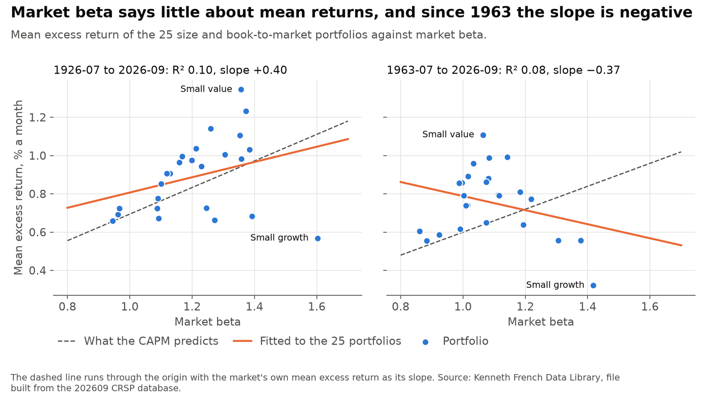
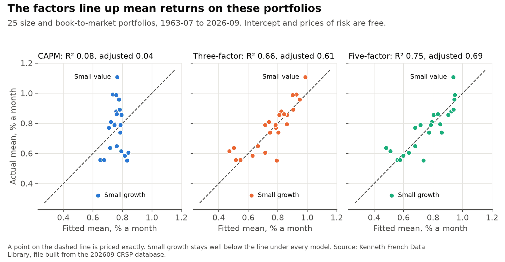
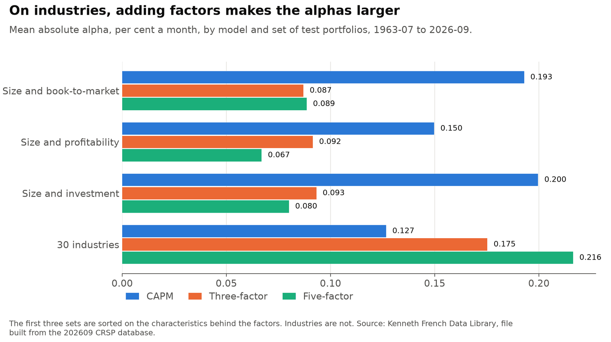

Testing the CAPM and the Fama-French factor models through 2026
Does the capital asset pricing model (CAPM) hold up on US stock returns through the latest available month, and how much do the Fama-French three- and five-factor models add? It starts by reproducing a result I first got in 2021, then tests all three models on data through September 2026. Results are as of November 2026 and describe files built from the 202609 CRSP database.
Personal project: my own analysis of publicly available data. It is not associated with my work for any current or past employer and does not represent their views. It tests models on past returns and isn't investment advice.
At a glance
| Question | Methods | Answer |
|---|---|---|
| Does my 2021 result reproduce? | The 2021 regression on its original files | Yes: R² 0.1144 and slope 0.3993. On current files through 2026-09, R² is 0.098. |
| Does the CAPM hold up? | GRS, Fama-MacBeth with Shanken errors | No. GRS rejects it (p below 0.001), and since 1963 the slope on beta is negative. |
| How much do the factors add? | Same tests, spanning regressions, Hansen-Jagannathan distance | Since 1963, R² goes from 0.08 to 0.66 to 0.75, and mean absolute alpha from 0.19 to 0.09 to 0.09. GRS rejects all three. |
| Is that stable? | Subperiods | No. The CAPM is not rejected before 1963, and since 2009 no model's R² is above 0.16. |
| Does it depend on the portfolios? | Three more sets of test portfolios | Yes. On 30 industries, adding factors makes the alphas larger. |
Test portfolios are the 25 value-weighted portfolios formed on size and book-to-market, unless stated otherwise. Returns are monthly, in per cent, in excess of the T-bill rate. Alpha is the part of a portfolio's mean return a model leaves unexplained. The GRS test asks whether all the alphas are zero together.
1. Does the CAPM hold up?

The two samples have about the same R², and they say different things. Over the full history the slope has the right sign and is about 60% of the market premium. Since 1963 it is negative, and the intercept, which the CAPM says is zero, is 1.16% a month. The R² alone hides this.
2. How much do the factors add?

| 1963-07 to 2026-09 | CAPM | Three-factor | Five-factor |
|---|---|---|---|
| GRS F | 4.17 | 3.63 | 3.21 |
| p, resampled | below 0.001 | below 0.001 | below 0.001 |
| Mean absolute alpha, % a month | 0.193 | 0.087 | 0.089 |
| Largest absolute alpha | 0.529 | 0.466 | 0.277 |
| Cross-sectional R² | 0.08 | 0.66 | 0.75 |
| 95% resampled range for R² | 0.00 to 0.53 | 0.22 to 0.85 | 0.39 to 0.90 |
| Hansen-Jagannathan distance | 0.375 | 0.351 | 0.328 |
The three-factor model does most of the work on these portfolios. It halves the mean absolute alpha and takes out most of the value pattern. The five-factor model leaves the mean alpha where it was and mainly shrinks the largest one, small growth. The R² ranges overlap, so these data do not separate the two models on that measure. All three are rejected.
3. Is that stable?
Before 1963 the CAPM is not rejected (resampled p 0.185) and beta lines up with mean returns, though the price of market risk is imprecise. The three- and five-factor models fit best from 1963 to 1990, close to the period they were built on, with R² of 0.77 and 0.87. Since 2009 their R² has fallen to 0.14 and 0.16, and whether they are rejected depends on the p-value used. The 72 months since the 2021 data ended are too few to settle much with 25 portfolios.
4. Does it depend on the portfolios?

Size and book-to-market portfolios are a low bar, because the factors are built from the same sorts (Lewellen, Nagel and Shanken, 2010). On industries the pattern reverses: the CAPM is not rejected, and the extra factors raise the mean absolute alpha. The CAPM's rejection comes from portfolios sorted on these characteristics, and the extra factors' gains don't carry over to portfolios formed another way.
Limits
- Betas are full-sample within each period, and fitted means use the same data. Errors in the betas bias prices toward zero.
- The subperiod results are several tests on the same data, with no adjustment for that.
- French's files change over time as CRSP revises its data, so new files will change these numbers. Over the same months, the current files give an R² of 0.1176 against 0.1144 in 2021.
Data
Kenneth French Data Library, files built from the 202609 CRSP database, 1926-07 to 2026-09. The five-factor file starts in 1963-07, so comparisons of all three models use 759 months from then.